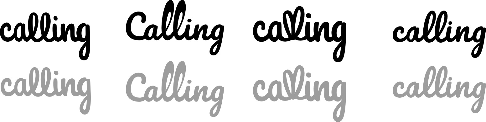
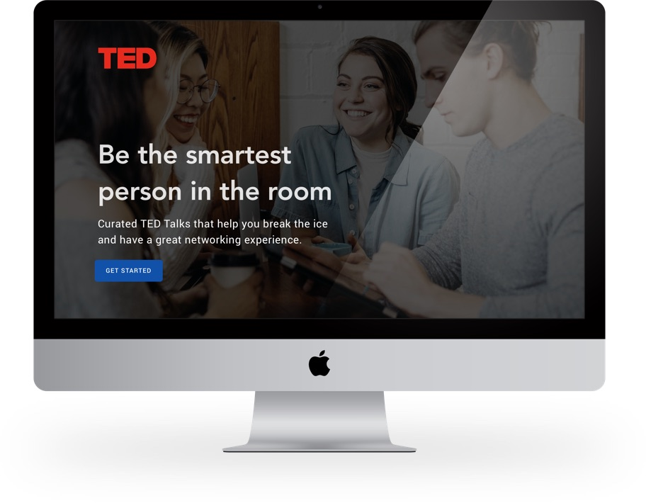
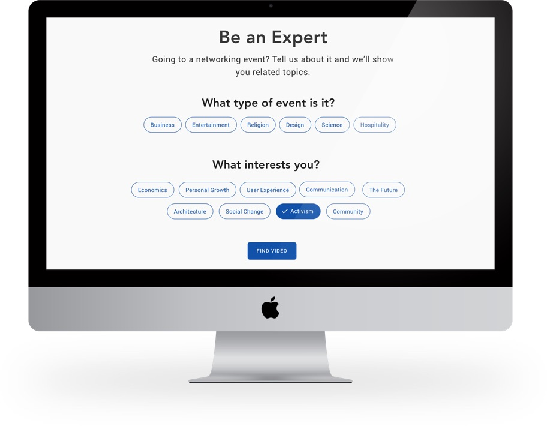

Illustration

Logo Exploration
Ted × New Grads

In an effort to make networking easier and less awkward for new grads, I designed a system that would allow users to find TED Talks. To acheive this, users would select the event type and industry, and also their own personal interests allowing them to find a great conversation starter that would help them to break the ice and feel comfortable in an otherwise awkward situation.